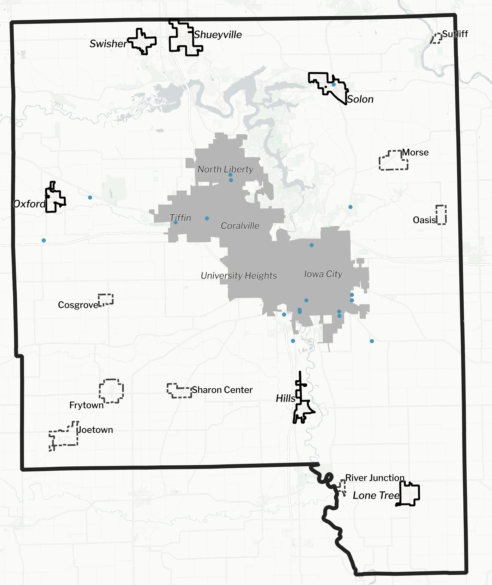

Assessing housing needs and opportunities within the non-metro area.
This study focuses on unincorporated Johnson County plus the six small cities of Hills, Lone Tree, Oxford, Shueyville, Solon, and Swisher. These areas are referred to collectively as the “non-metro area.” Unless otherwise indicated, this study’s data excludes the cities of Iowa City, Coralville, University Heights, Tiffin, and North Liberty. These cities were assessed by a similar study concluding in 2025. The study also includes a focus on the county’s manufactured home parks (MHPs), including those within the metro area.

Study goals:
- Assess equity needs such as housing stability, economic security, supportive community, and inclusion.
- Recommend housing needed to satisfy future demand in the unincorporated area and each small city.
- Identify gaps, barriers and housing needs and potentially preferences.
- Recommend feasible and attainable actions for local elected officials to consider and implement.
One of the priorities in the Johnson County comprehensive plan is equitable access to safe and affordable housing. This priority includes addressing the need for affordable housing supply and improving the quality and safety of existing and future housing for residents.
Led by the Planning, Development, and Sustainability Department along with the Social Services Department, this housing assessment study is intended to help inform housing, land use, transportation, and potentially other policy decisions of local elected officials as well as inform comprehensive or other planning documents for the unincorporated area and for each small city at those Cities’ discretion.